HANDS-ON ENTERPRISE HOMELAB
HoneyBadger Lab
IT Infrastructure • Cybersecurity • Systems Administration
A multi-system enterprise-style virtual environment built to develop practical experience in desktop support, Windows Server administration, Active Directory, networking, cybersecurity monitoring, Linux, IT service management, and troubleshooting.
ABOUT THE LAB
Enterprise IT Experience Built at Home
HoneyBadger Lab recreates common enterprise technologies and support workflows in a controlled virtual environment. The lab is used to practice deployment, administration, troubleshooting, monitoring, security, and documentation.
INFRASTRUCTURE
HoneyBadger Lab Architecture
The environment combines Windows Server, Windows clients, Linux, network security, SIEM, ITSM, file services, endpoint administration, and security testing into one integrated lab.

Identity
Active Directory Domain Services, DNS, organizational units, users, groups, authentication, and Group Policy.
Networking
OPNsense firewall, LAN routing, firewall policies, network segmentation, DNS, DHCP, and remote access.
Security
Wazuh SIEM, endpoint agents, log collection, vulnerability monitoring, Kali Linux, and security testing.
IT Operations
GLPI ticketing, asset management, Windows endpoints, file services, user support, and troubleshooting.
VIRTUALIZATION
Live VMware Environment
The infrastructure is deployed in VMware Workstation as multiple interconnected virtual machines rather than simulated only through documentation.

Multi-System Enterprise Lab
VMware Workstation hosts Windows Server, Windows 11, Ubuntu/Linux, Kali Linux, OPNsense, Wazuh, file services, and the GLPI help desk environment.
PROJECTS
Hands-On Lab Projects
Each project focuses on practical skills used in desktop support, systems administration, networking, and cybersecurity roles.
Active Directory
Windows Server domain deployment, organizational units, users, groups, authentication, DNS, and domain administration.
02Group Policy
Centralized Windows configuration and security policies using Active Directory Group Policy.
03Enterprise File Server
Department shares, NTFS permissions, mapped network drives, access control, and centralized file storage.
04OPNsense Firewall
Virtual firewall deployment, routing, network security policies, NAT, and traffic management.
05Wazuh SIEM
Centralized security monitoring, endpoint agents, event collection, threat detection, and security analysis.
06GLPI Help Desk
IT service management environment integrating ticketing, users, technicians, incidents, assets, and Active Directory.
07Linux Server
Linux server deployment, SSH administration, networking, services, permissions, and command-line management.
08Kali Security
Security testing environment for network discovery, scanning, vulnerability assessment, and defensive security practice.
09Remote Access
Secure remote administration of the lab using RDP, VPN-style connectivity, and remote management tools.
IDENTITY MANAGEMENT
Active Directory Environment
HoneyBadger Lab uses a Windows Server domain to simulate centralized enterprise identity and endpoint management.

Users & Organizational Units
The domain is organized into departmental organizational units to simulate an enterprise directory structure.
- Department-based organizational units
- Domain user accounts
- Security groups
- Centralized authentication
- Group Policy administration
- Windows domain clients
WINDOWS SERVER
Domain Services Infrastructure
Windows Server provides the centralized identity, authentication, DNS, and management services used throughout the HoneyBadger Lab environment.
Active Directory Domain Services
The HoneyBadger domain controller provides the core enterprise directory services required for centralized user, computer, and policy management.
- Windows Server 2022 administration
- Active Directory Domain Services
- DNS services
- Domain authentication
- Centralized user management
- Server role administration
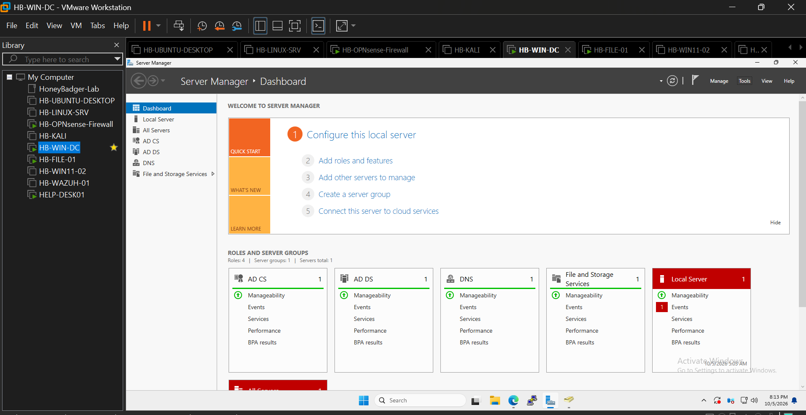
CENTRALIZED MANAGEMENT
Group Policy Administration
Group Policy is used to centrally configure Windows endpoints and automatically deploy resources to users based on their Active Directory organization.
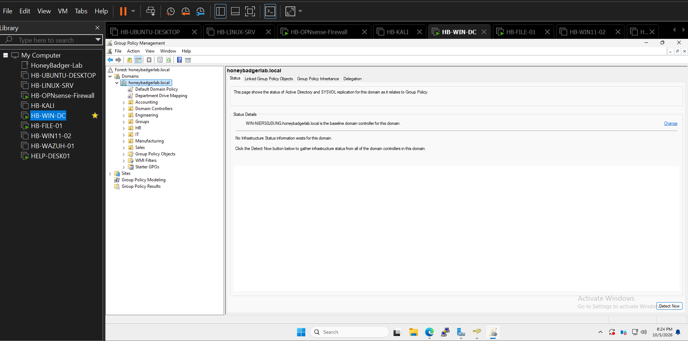
Enterprise Policy Management
Policies are managed through the domain and linked to organizational units to simulate centralized endpoint administration in a business environment.
- Group Policy Management Console
- Department-based policy deployment
- Organizational unit targeting
- Centralized Windows configuration
- Network drive deployment
FILE SERVICES
Enterprise File Server
The lab uses a dedicated Windows file server to provide department-based network storage with SMB shares, Active Directory security groups, and NTFS permissions.
Department Network Shares
Separate network shares provide centralized storage for departments across the HoneyBadger Lab domain.
- Accounting share
- Engineering share
- HR share
- IT share
- Manufacturing share
- Sales share
- Centralized company resources
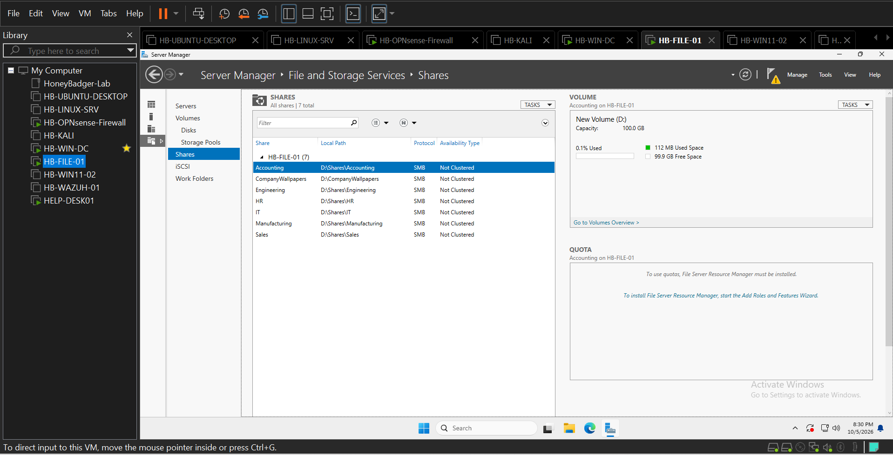
ACCESS CONTROL
NTFS Permissions & Security Groups
File access is controlled using Windows NTFS permissions and Active Directory security groups, providing department-specific access to network resources.
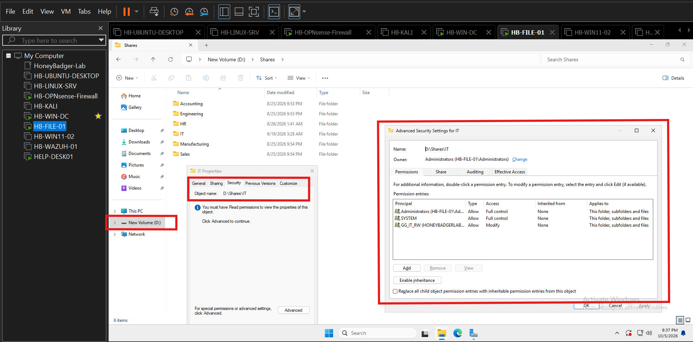
Role-Based File Access
Department security groups are assigned appropriate NTFS permissions so access can be managed through Active Directory rather than individual accounts.
- Security-group-based permissions
- NTFS access control
- Modify and read permissions
- Administrator full control
- Department resource isolation
ENDPOINT MANAGEMENT
Automated Network Drive Mapping
Department network drives are automatically deployed to domain users through Group Policy, demonstrating centralized resource provisioning.
IT Department Mapped Drive
The IT network share is automatically mapped for authorized users, connecting endpoint configuration with Active Directory and file-server permissions.
- Group Policy Preferences
- Automatic drive mapping
- Department-specific resources
- Centralized configuration
- SMB network access
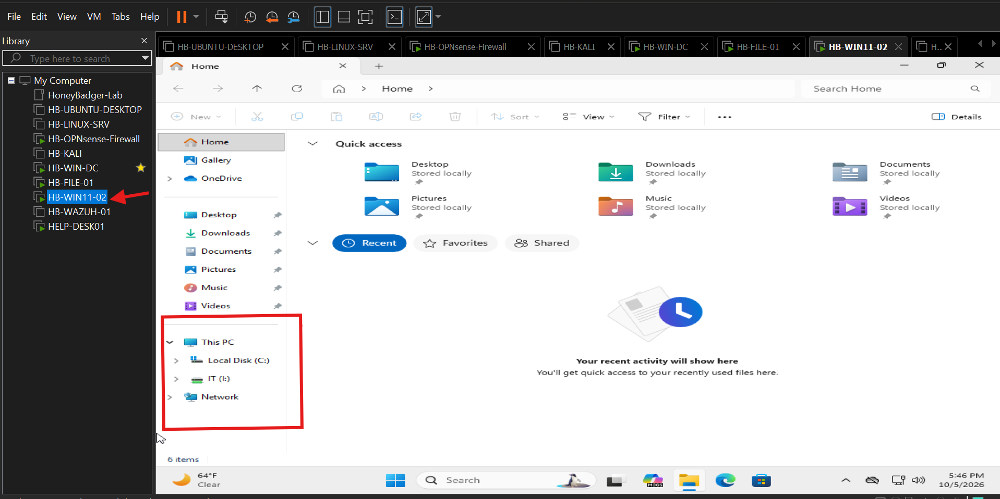
WINDOWS ENDPOINT
Domain-Joined Client Validation
Windows 11 endpoints are joined to the HoneyBadger domain and used to validate authentication, DNS, networking, Group Policy, and access to enterprise resources.
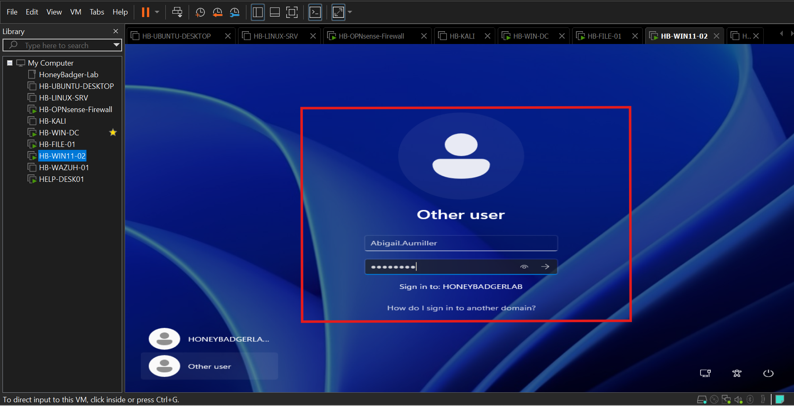
Domain User Login
Successful domain authentication demonstrates communication between the Windows endpoint and Active Directory domain controller.
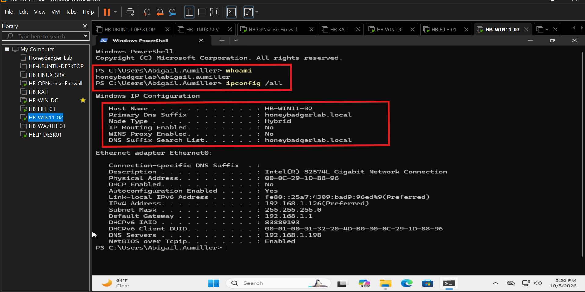
Network Configuration
Endpoint IP configuration is validated to troubleshoot connectivity, DNS, gateway, and domain communication.
SECURITY OPERATIONS
Wazuh SIEM & Endpoint Monitoring
HoneyBadger Lab includes a working Wazuh security monitoring platform that collects endpoint telemetry, Windows security events, authentication activity, and system information from monitored hosts.
Centralized Security Monitoring
Wazuh provides centralized visibility into monitored systems and allows security events to be investigated from a dedicated SIEM dashboard.
- Centralized event collection
- Windows endpoint monitoring
- Security event analysis
- Endpoint agent management
- Authentication monitoring
- Threat hunting
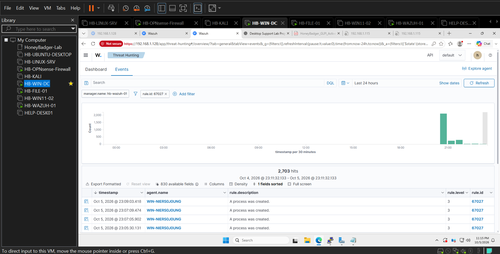
THREAT DETECTION
Windows Security Event Collection
Endpoint activity is forwarded to Wazuh and analyzed centrally, providing hands-on experience with SIEM telemetry, event investigation, and detection workflows.
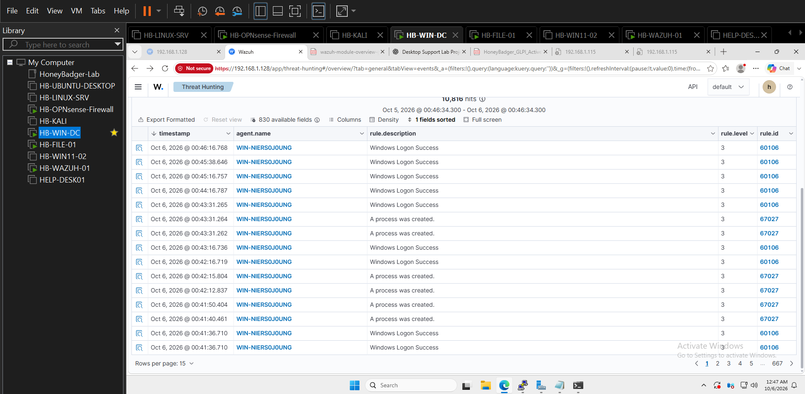
Authentication Events
Windows authentication activity is collected and displayed for security investigation.
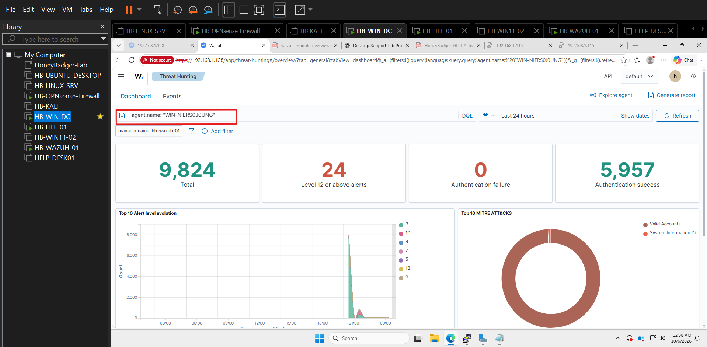
Endpoint Agent Monitoring
Windows systems are enrolled as Wazuh agents, allowing endpoint telemetry to be centrally collected and analyzed.
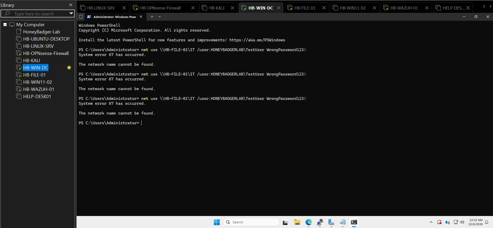
Controlled Authentication Testing
Controlled lab activity is generated to validate security logging and demonstrate the complete detection pipeline.
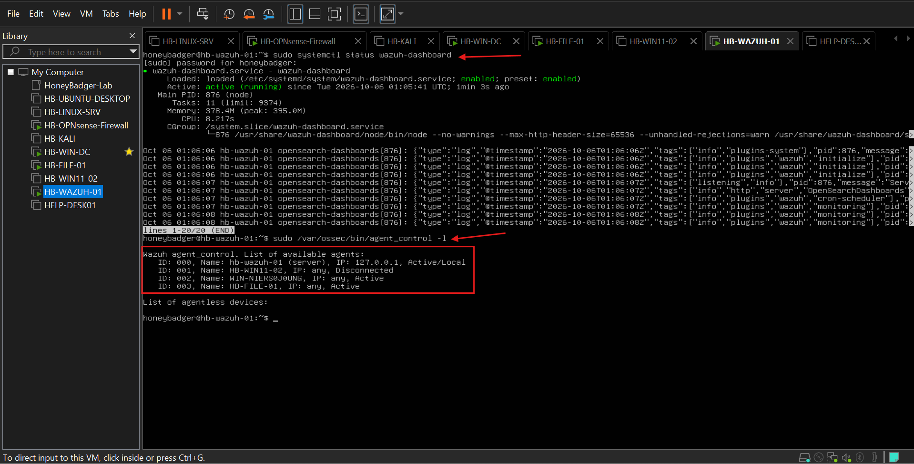
SIEM Service Health
Wazuh services are validated from the Linux server to confirm the monitoring infrastructure is operational.
SIEM INFRASTRUCTURE
Wazuh Platform Administration
The SIEM environment is administered directly from the Linux server, including service validation, agent connectivity, manager status, and secure dashboard access.
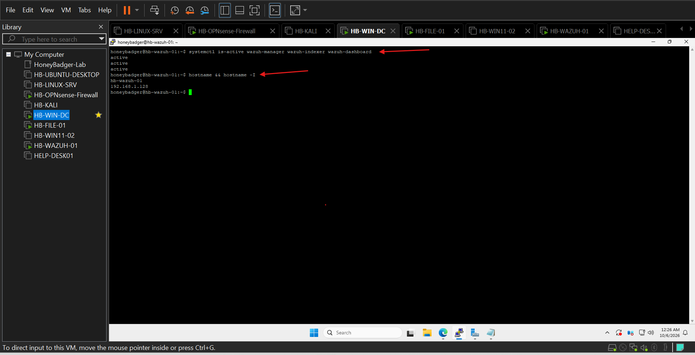
Service Administration
Linux command-line administration is used to verify and troubleshoot Wazuh components.
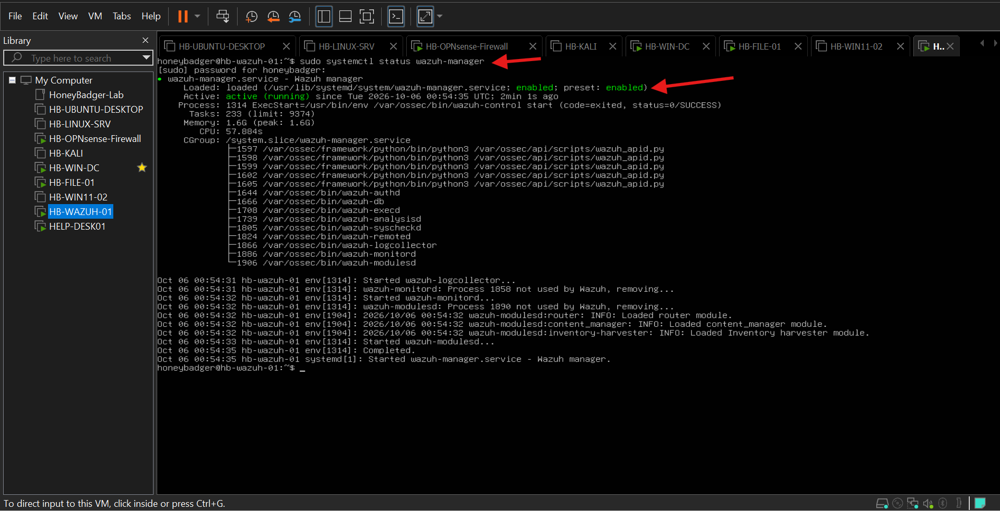
Service Configuration
Core monitoring services are configured and validated for reliable operation.
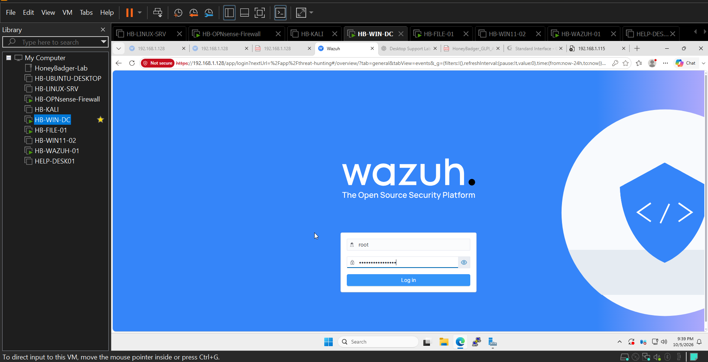
Secure Dashboard Access
Administrative access to the Wazuh dashboard provides a dedicated interface for monitoring and investigating security activity.

Operational Validation
Additional system validation confirms the SIEM environment is functioning as part of the broader HoneyBadger Lab infrastructure.
IT SERVICE MANAGEMENT
GLPI Help Desk
The lab includes a working IT service management platform for practicing real help-desk workflows from ticket submission through technical resolution.
Ticket Management Workflow
GLPI provides a realistic service desk environment where users can report incidents and technicians can categorize, prioritize, assign, document, and resolve support requests.
- Incident creation
- Ticket categorization
- Urgency and impact
- Technician assignment
- Active Directory users
- Resolution documentation

TECHNOLOGIES
Skills Demonstrated
Systems
Windows Server 2022
Windows 11
Ubuntu Linux
Kali Linux
Infrastructure
Active Directory
DNS & DHCP
Group Policy
File Services
Security
Wazuh SIEM
OPNsense
Endpoint Monitoring
Security Testing
IT Support
GLPI ITSM
Incident Management
Troubleshooting
Remote Support